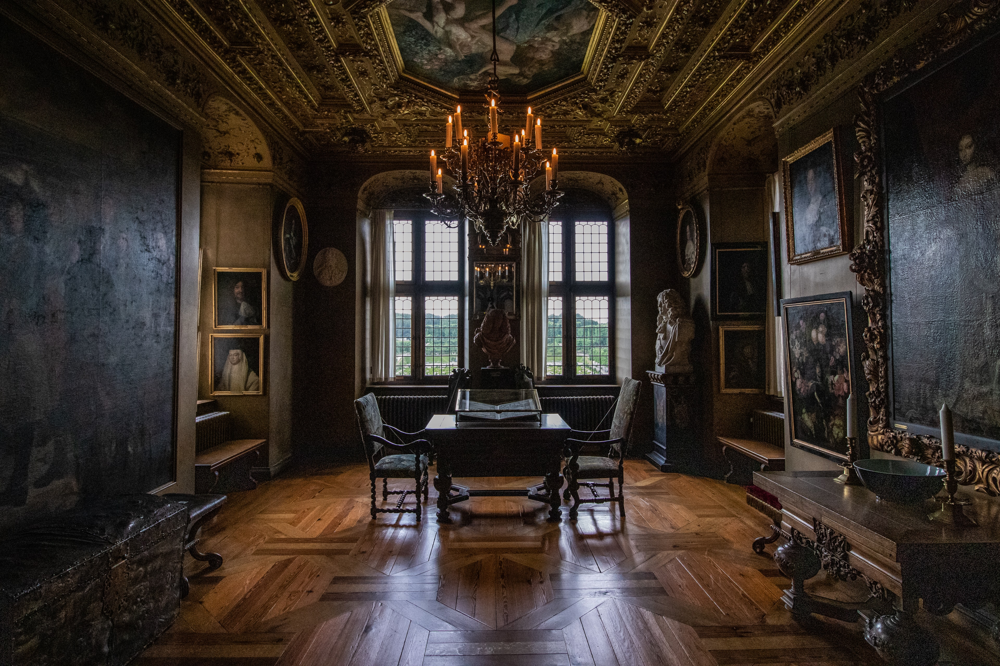

아이스크림 왕국 왕실의 스카웃 제의를 받은 당신은 아몬드봉봉을 따라 성 안으로 들어간다.
성 안 응접실에 도착한 당신은 민초공주를 만나게된다.
"안녕하세요, 저는 민초공주입니다. 왕위 계승식을 앞두고 있던 중 누군가로부터 암살 예고 편지가 도착했어요. 이대로 가다간 저희 왕국에 큰 혼란이 찾아올 것 입니다. 반드시 이들을 막아야 해요."
민초공주는 그 이야기를 하며 당신에게 칼을 한 자루 건낸다.
"저희 가문에 대대로 내려져 오는 귀중한 칼입니다. 이 임무에 성공한다면 더 귀한 금은보화도 드리도록 하겠습니다. 그 칼로 저와 저희 왕국을 지켜주세요."
민초공주의 이야기를 듣던 중 갑자기 밖에서 소란스러운 소리가 들려온다!
무언가 위험한 상황이 다가오고 있는 것 같은데 어떻게 하지?
- 일단 여기서 빠져나가야 해! 민초공주를 데리고 복도로 나간다.
- 먼저 민초 공주를 안전한 곳에 숨기자! 응접실 안 옷장 속에 민초공주를 숨긴다.